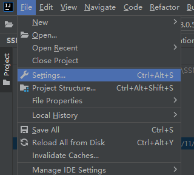

使用IDEA版本 2021.2.3 (Ultimate Edition)
IntelliJ IDEA 2021.2.3 (Ultimate Edition)
Build #IU-212.5457.46, built on October 12, 2021
Runtime version: 11.0.12+7-b1504.40 amd64
VM: OpenJDK 64-Bit Server VM by JetBrains s.r.o.
Windows 10 10.0
GC: G1 Young Generation, G1 Old Generation
Memory: 2048M
Cores: 16
配置git并上传到github仓库
流程
配置前提: git环境已经安装完成
配置IDEA
首先需要打开或者创建一个项目
在项目首页左上角点开 File (文件)
—> 然后选择 Settings (设置)
然后在 Version Control 里面, 点开Git
—> 如果IDEA没有自动检测到git的安装目录, 需要点击文件夹标识然后找到git.exe配置一下
配置前提: git环境已经安装完成
接着可以点击Test按钮, 成功的话IDEA会显示git的版本号

将项目设置为git项目
点击菜单栏的 VCS (Version Control System没有记错的话…)
—> 然后点击 Create Git Repository (创建git仓库)

然后你会发现项目的文件变成了红色, 代表这些代码没有加入到 git 本地项目索引中
右键整个项目文件夹, (或者单个文件也可以, 如果你只想同步一个文件)
—> 在右键菜单偏下的位置选择 Git
—> 再点击子菜单下的 Add (添加)

这时候整个项目都被加入了本地索引中, 所有添加的文件显示绿色

提交到本地仓库
然后在IDEA项目界面的左下角有个 Git 标签, 点击

如果是新建的 git 项目, 中间应该是这样显示的的
点击 Commit local changes (提交到本地仓库)

然后会显示这样的就界面, 代表有修改有变化的文件
文件颜色:
绿色—代表新文件
蓝色—代表文件中内容有变化的文件
红色—代表这个文件没有被添加到本地索引, 所以 commit 提交的时候不会算在内

点击 Commit 按键, 可以提交到本地仓库
注意: 提交描述是必填项
提交到在线仓库
如果要同步提交到Github或者其他git在线仓库, 点击上图中的 Commit and Push, 如果本地没有修改就会提交到云端
或者在项目界面的顶端有几个小按钮

向上的绿色箭头, 就代表Push
点击同步到云仓库
如果是第一次使用IDEA配置Git, 点击Define Remote 会弹出窗口
—> 需要填写要同步到的仓库具体url链接地址
这时候在github上创建一个仓库并将地址填入 URL 中点击确定

idea弹出需要登录github的窗口或者网页, 根据指示登录授权即可.
end…